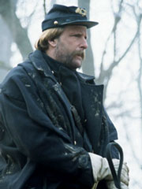

|
Long awaited by both historians and buffs, the film
Gods and Generals is a prequel to the 1993 film
Gettysburg. As Gettysburg was based on the
historical novel The Killer Angels (1974) by Michael
Shaara, so Gods and Generals is based on the 1998
historical novel of that title written by Shaara's son Jeff.
The new film's purpose is to sketch highlights of the Civil
War in the eastern theater from Virginia's secession through
the death of the Confederate general Thomas J. "Stonewall"
Jackson.
The need to set the stage for Gettysburg influenced the
choice of what to cover in the almost four-hour-long
prequel. For example, Gods and Generals covers the battle of
Fredericksburg while entirely omitting the much more pivotal
battle of Antietam. This omission occurs in part because
Fredericksburg was the first combat experience of the key
Gettysburg protagonist, Joshua Lawrence Chamberlain, and
because it was the event for which the Union repulse of
Pickett's charge at Gettysburg was a suitable payback. One
suspects that another reason the film skips Antietam is that
it led to Abraham Lincoln's issuing the Emancipation
Proclamation; coverage of that document might have led
viewers to suspect that the war had something to do with
slavery. Of this, more anon.
Like the Civil War soldiers it depicts, the film Gods and
Generals has its triumphs and its defeats. In some ways it
is an improvement over Gettysburg. Robert Duvall's portrayal
of Robert E. Lee is infinitely superior to Martin Sheen's
glassy-eyed performance in the earlier film. The makeup is
better, too, so that the viewer does not see what appear to
be beavers clinging to generals' chins, as in Gettysburg.
And the artillery pieces actually recoil when fired.
On the other hand, Gods and Generals perpetuates some of
its predecessor's weaknesses. Actors still deliver, in
spoken form, lines that their characters composed for
written communication, making some scenes even more stilted
than the nineteenth century actually was. Other scenes have
the feel of that favored entertainment of the
mid-Victorians, the tableau vivant-but not very vivant.
Sometimes it is like watching an animated wax museum.
The greatest triumph of Gods and Generals lies in Stephen
Lang's splendid depiction of Stonewall Jackson. It is
difficult to imagine a more authentic and convincing
presentation of the renowned general. Eschewing popular
mythology that makes Jackson a wild-eyed maniac, Lang
presents an understandable character that is, in almost
every case, true to what we know about Jackson. This is
important to Gods and Generals because Jackson's role looms
so large that the film might more accurately have been
titled simply Stonewall Jackson.
When they wanted to do so, the makers of Gods and
Generals were accurate in both detail and nuance.
Unfortunately, the filmmakers preferred to spend much of the
nearly four-hour running time of the movie doing a great
deal of ax-grinding. The result is the most pro-Confederate
film since Birth of a Nation, a veritable celluloid
celebration of slavery and treason.
Gods and Generals brings to the big screen the major
themes of Lost Cause mythology that professional historians
have been working for half a century to combat. In the world
of Gods and Generals, slavery has nothing to do with the
|

Jeff Daniels plays Joshua
Lawrence Chamberlain in Gods and Generals.
|
Confederate cause. Instead, the Confederates are nobly
fighting for, rather than against, freedom, as viewers are
reminded again and again by one white southern character
after another. In stark contrast, the pro-Union, antislavery
view of the war is expressed only once. In one example of
this unequal presentation, viewers hear the Confederate
defenders of the famous sunken lane at Fredericksburg
exclaiming that they are fighting for freedom and
independence, but the Union attackers, members of the
renowned Irish Brigade, make only trivial comments. Yet
historical sources document in the Irishmen's own eloquent
words why they, as immigrants, believed they ought to fight
for the Union. The filmmakers did not see fit to have any of
the actors mouth those lines.
Similarly, the film depicts slaves as generally happy,
vaguely desiring freedom at some future date, but faithful
and supportive of their beloved masters and the cause of the
Confederacy. Slaveholders in the film treat their slaves
like family or better, and the slaves reciprocate by doing
their best to protect their masters' property from the
invading Yankees. The many thousand times more numerous
slaves who eagerly sought freedom and aided Union soldiers
are invisible in Gods and Generals.
Another aspect of Lost Cause mythology depicted in the
film deals with religion. Echoing pro-Confederate claims
since the war itself, the movie represents the South as
being uniquely and sincerely Christian, while the North has
at most a vague spirituality. In fact, both sides had about
an equal representation of Christianity. Once again, Gods
and Generals presents a skewed depiction of history through
judicious omission. While the film-for the most part
accurately-presents Stonewall Jackson as a saint in every
sense of the word, viewers never learn that Oliver O.
Howard, the Union general whose troops Jackson's men so
savagely attacked at Chancellorsville, was an even more
fervently evangelical soldier.
Jackson's attack at Chancellorsville is the dramatic
climax to the film and a neo-Confederate's dream of
paradise. As Jackson rides boldly forward flanked by staff
officers, the mounted party gallops toward the viewer,
larger than life, and the score swells, simultaneously
triumphant and otherworldly, a fittingly Wagnerian style of
accompaniment for this ride of the Confederate valkyries.
Any lingering doubts as to the filmmakers' sympathies
promptly vanish.
The final scene at Jackson's deathbed is meant to be sad,
and it is indeed very moving. Yet I left the showing quite
sad in a different way. Despite the makers' large
expenditures and serious efforts toward accuracy in some
details, they marred the result by their willingness to
perpetuate a distorted view of the Civil War.
Source: Steven E. Woodworth in The Journal of
American History 90:3 (December 2003), 1123-24.
|